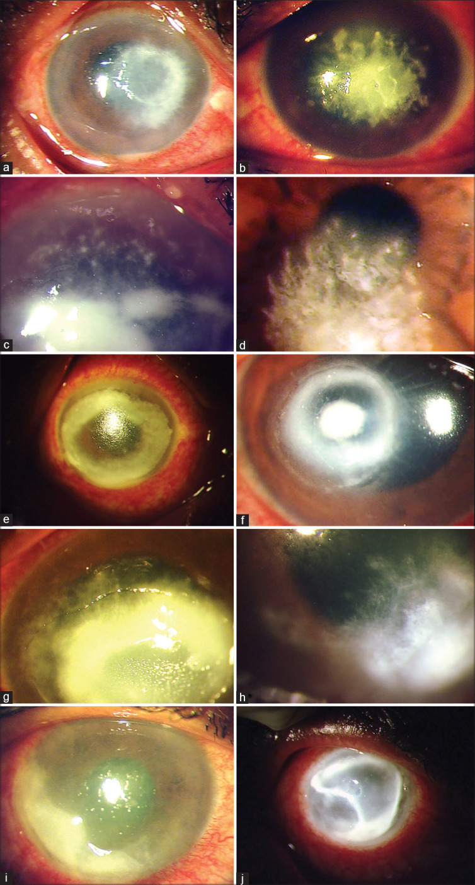
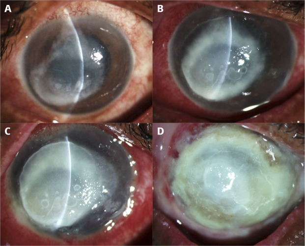
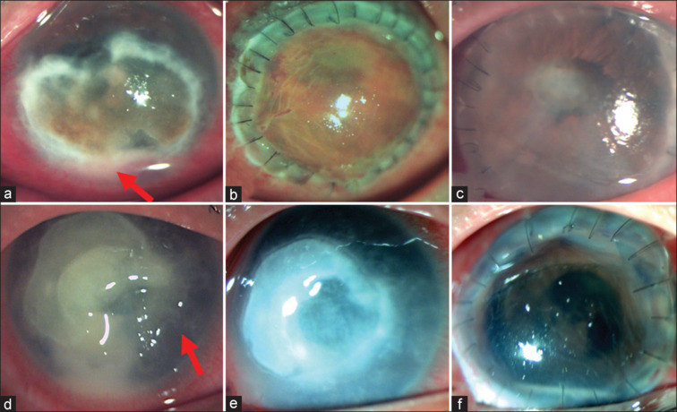
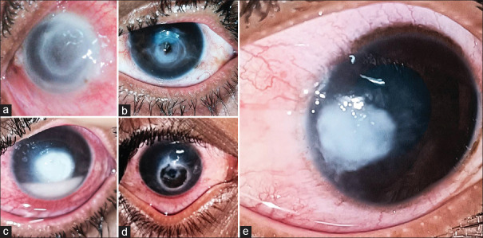

3200 — Viêm giác mạc do Pythium insidiosum: "nấm giả" không có ergosterol — tua, chấm nội nhu mô, rãnh ngoại vi / Pythium insidiosum keratitis
Tags: pattern:tham-nhien-giac-mac pattern:o-loet-giac-mac pattern:tua-giac-mac pattern:cham-noi-nhu-mo pattern:luoi-noi-nhu-mo pattern:ranh-ngoai-vi pattern:vong-tham-nhien vung:mat vung:giac-mac protocol:den-khe protocol:cam-mau-cay protocol:PCR-ITS protocol:IVCM protocol:AS-OCT
Mức chắc chắn (certainty): tổng hợp y văn (literature synthesis) — nhóm tự biên từ y văn mở, không có bệnh nhân của mình. Số liệu chính: tổng quan bệnh học/điều trị PMID 35325996 (PMC9240499); nghiên cứu phân biệt Pythium – nấm có hệ điểm lâm sàng (27 mắt Pythium vs 69 mắt nấm) PMID 36190038 (PMC9789832); loạt 30 mắt PMID 33913840 (PMC8186601); kết cục ghép giác mạc PMID 39078955 (PMC11451789) và PMID 37203046 (PMC10391487); MIC kháng nấm vô hiệu PMID 41446846 (PMC12722454); vòng thâm nhiễm PMID 41930013 (PMC13043113); tổng quan Ấn Độ 2025 PMID 41446894 (PMC12722410). Ảnh: PMC9789832, PMC11921247, PMC11451789, PMC13404707 — ghi giấy phép từng ảnh ở images/CREDITS.md.
Câu chốt: Pythium insidiosum không phải nấm — nó là oomycete (Straminipila) có vách cellulose + β-glucan và KHÔNG có ergosterol, nên toàn bộ nhóm azole/polyene vô hiệu (MIC kháng nấm > 128 µg/mL so với azithromycin 8 µg/mL, doxycycline 4 µg/mL). Trên đèn khe nó bắt chước nấm từng chi tiết (bờ bông, mảng nội mô, mủ tiền phòng, thủng), nhưng có 5 dấu hiệu "không phải nấm": tua (tentacles), chấm nội nhu mô (intrastromal dots), hình lưới (reticular pattern), rãnh ngoại vi (peripheral furrow/guttering), lan rìa sớm. Ba câu hỏi trước khi kê thuốc: (1) có tiếp xúc nước/nông nghiệp hay kính + nước không? (2) có ≥ 2 trong 5 dấu hiệu trên không? (3) đã dùng kháng nấm bao nhiêu ngày mà vẫn nặng lên?
1. Tổng quan bệnh học – cơ chế hình ảnh (TẠI SAO)
1.1 Ngưỡng định lượng (số phải nhớ)
- Vị trí phân loại: oomycete, không phải nấm — vách cellulose + β-glucan, thiếu ergosterol; sinh sản vô tính bằng túi bào tử chứa động bào tử hai roi (biflagellate zoospores) (PMC9240499). Chính "không có ergosterol" là lý do vật lý khiến azole (ức chế 14α-demethylase) và polyene (bám ergosterol) không có đích.
- MIC — bằng chứng định lượng cho "kháng nấm vô hiệu": doxycycline MIC 4 µg/mL, azithromycin MIC 8 µg/mL, trong khi kháng nấm MIC > 128 µg/mL; mô hình chuột nhiễm dưới da sống 80–90% với azithromycin/doxycycline đơn trị so với 20% nhóm chứng (PMC12722454).
- Dịch tễ: Thái Lan là nơi mô tả ca đầu tiên và ổ dịch địa phương (endemic); Ấn Độ là ổ thứ hai; tổng quan 1.084 ca pythiosis ở người cho thấy Ấn Độ + Thái Lan là điểm nóng, ca lẻ đang tăng ở Trung Quốc, châu Mỹ, châu Âu (PMC12722454). ~50% ca Pythium giác mạc là nội trợ, nhân viên văn phòng, người thành thị — tức không cần tiền sử nông nghiệp rõ (PMC9240499).
- Loạt lớn nhất (114 mắt): tuổi trung bình 41 ± 14,3, 43% nam, 40,4% nông dân, 55,3% không tìm được yếu tố thuận lợi; thị lực lúc vào logMAR trung vị 2,78 (khoảng 0,10–3,00); đường kính thâm nhiễm trung vị 5,5 × 6 mm (1–10 mm mỗi chiều) (PMC9240499).
- Điều trị nội khoa: kiểm soát được nhiễm ở 50–60% ca, thời gian trung vị ~3 tháng (PMC9240499).
- Loạt 30 mắt Nam Ấn: 80% chấn thương nhẹ, 23,3% tiếp xúc nước bẩn; 23,3% khỏi với linezolid 0,2% + azithromycin 1%, 63,3% phải ghép giác mạc điều trị (TPK), 23,3% nhiễm lại trong ghép, 10% viêm nội nhãn, 10% teo nhãn (PMC8186601).
- Sau TPK: tái phát 20–71%; dùng cryotherapy ± ethanol tuyệt đối trong mổ hạ tái phát xuống 7,1%; tỉ lệ múc nội nhãn/teo nhãn < 10–12% ở các báo cáo gần (PMC9240499).
1.2 TẠI SAO hình ảnh giống nấm đến vậy
- Trên KOH 10%/Gram, sợi của Pythium là sợi hyaline rộng, ít vách, phân nhánh vuông góc hoặc tù (perpendicular/obtuse) — trùng mô tả "sợi nấm", nên phòng xét nghiệm báo nấm và bác sĩ khởi trị kháng nấm (PMC9240499).
- Cấy: mọc trên thạch máu/thạch dinh dưỡng thường thành khuẩn lạc kem-trắng, xù như bông; trên Sabouraud mọc rất nghèo — đây là bẫy quy trình: chỉ cấy Sabouraud thì dễ âm tính giả (PMC12722410).
- Cơ chế "lan nhanh": động bào tử hình thành trong 1 giờ sau khi cảm ứng, tạo mầm ống trong 24 giờ → lượng mycelium lớn rất nhanh; mô đích là nhu mô giác mạc → chảy mủ nhu mô (melting) sớm dù đang dùng kháng nấm (PMC9240499).
- TẠI SAO có "tua" (tentacles) và "rãnh ngoại vi" (furrows): sợi nấm mọc men theo bó collagen và men theo dây thần kinh giác mạc → trên đèn khe thấy nhánh tua tỏa ra từ bờ ổ loét; ở rìa ổ loét, mô hoại tử co lại không đều tạo rãnh lõm (guttering). Đây là dấu hiệu hình thái của hướng mọc, không phải phản ứng viêm — nên nó không mất khi dùng corticoid, khác vòng Wessely.
- TẠI SAO "chấm nội nhu mô" (intrastromal dots): ổ viêm dạng hạt nhỏ nằm sâu trong nhu mô, phản ánh lan theo trục trước–sau của sợi; trên ảnh đèn khe khuếch tán chúng hiện thành đốm trắng rời rạc (xem ảnh mục 3, panel c).
- TẠI SAO thiếu "vòng miễn dịch" lại có giá trị: vòng Wessely là phản ứng kháng nguyên–kháng thể, gặp ở 11,6% mắt nấm nhưng 0% mắt Pythium trong loạt so sánh (PMC9789832) — tức có vòng kiểu Wessely nhẹ khả năng nấm hơn. Nhưng vòng thâm nhiễm đậm (ring infiltrate) thì gặp cả ở Pythium (loạt 7 ca năm 2026) và là bẫy chẩn đoán vì gợi Acanthamoeba/nấm (PMC13043113).
1.3 TẠI SAO phải phân biệt sớm — bằng số
- Mỗi ngày chậm trễ = thêm diện hoại tử; chỉ định ghép phụ thuộc đường kính thâm nhiễm và lan rìa. Ghép càng lớn càng mau thải: ghép < 10 mm có OR 5,824 (95% CI 1,292–41,6; p = 0,02) cho ghép trong (PMC10391487).
- Trong loạt 16 mắt ghép: thời gian từ khởi phát đến ghép trung bình 31,3 ngày, ghép trung bình 10,4 mm, 9/16 (56%) tái phát, ghép lại 11,7 mm, cứu được nhãn cầu 87,5%, chỉ 3/16 ghép trong ở 6 tháng, thị lực logMAR 2,32 → 2,04 (PMC11451789).
2. Mẫu hình + chẩn đoán phân biệt theo hình thái (gamut)
- Mẫu hình "Pythium điển hình": thâm nhiễm nhu mô nông→toàn bề dày, bề mặt khô, bờ bông/tua, chấm nội nhu mô, lưới ở bờ, rãnh ngoại vi, lan rìa sớm (giác mạc mờ đục ra tới limbic), mảng nội mô + mủ tiền phòng muộn, thủng nếu chậm.
- Gamut theo giai đoạn:
- 0–7 ngày: ổ loét mờ nhẹ + bờ tua, đau nhiều, "không đáp ứng kháng nấm" sau 3–5 ngày.
- 1–3 tuần: chấm nội nhu mô + lưới + rãnh ngoại vi, thâm nhiễm dày lên, mảng nội mô, mủ tiền phòng.
- > 3 tuần: chảy mủ nhu mô (melting), thủng, lan rìa/củng mạc, viêm nội nhãn, teo nhãn.
- Gamut theo cơ chế "bắt chước":
- Bắt chước nấm: Fusarium (bờ lông vũ, vệ tinh), Aspergillus (vòng, mảng), Candida (thâm nhiễm nông, tiền phòng).
- Bắt chước vi khuẩn: Pseudomonas (mủ xanh, melting nhanh, vành lan), tụ cầu/liên cầu (ổ khu trú), Mycobacterium atypicals (dạng chấm/lông, mạn).
- Bắt chước ký sinh trùng: Acanthamoeba (đau >> tổn thương, viêm thần kinh tỏa tia, vòng).
- Bắt chước virus: HSV (đuôi gai thật, bóng tận cùng), VZV.
- Không nhiễm trùng: viêm giác mạc do dung dịch/kính (CLARE), loét thần kinh dưỡng, bệnh mắt khô nặng — không được ghép sớm.
- Gợi nhớ 5 dấu hiệu (tự biên): T–D–R–F–L = Tentacles, Dots, Reticular, Furrow, Limbal spread. ≥ 2 dấu = nghi Pythium (độ đặc hiệu cao, xem mục 4).
3. Bảng so sánh phân biệt (ma trận đối chiếu)
| Thực thể (entity) | Hình ảnh điển hình trên đèn khe / IVCM / AS-OCT | Chốt vào (rule-in) | Chốt loại (rule-out) | Gợi ý xác nhận |
|---|---|---|---|---|
| Pythium insidiosum | Thâm nhiễm toàn bề dày, bề mặt khô, tua 59,3%, chấm nội nhu mô 25,9%, lưới, rãnh ngoại vi, lan rìa sớm; IVCM: sợi mảnh, thẳng, phân nhánh vuông góc | ≥ 2 dấu hiệu T–D–R–F; không đáp ứng kháng nấm sau 5–7 ngày; tiền sử nước/nông nghiệp | Vòng Wessely 0% (loạt 27 mắt); không có vệ tinh rõ | Cấy thạch máu + PCR ITS/18S; động bào tử bằng phương pháp lá |
| Nấm sợi (Fusarium/Aspergillus) | Bờ lông vũ (feathery), vệ tinh, bề mặt khô, mảng/plaque nổi, vòng Wessely 11,6% | Vệ tinh + bờ lông vũ + mảng nổi; đáp ứng một phần với natamycin 5% | Rãnh ngoại vi + tua + chấm nội nhu mô → nghi Pythium | Soi tươi KOH + cấy Sabouraud và thạch máu; PCR nấm |
| Acanthamoeba | Đau >> tổn thương, viêm thần kinh tỏa tia, vòng miễn dịch, nang vách đôi 10–25 µm trên IVCM | Đau không tương xứng + kính tiếp xúc + nước; nang vách đôi | Tua + rãnh ngoại vi (không gặp ở AK); IVCM không nang | IVCM (Se 94%), cạo + PCR 18S |
| Pseudomonas | Mủ xanh-vàng, melting rất nhanh (giờ), vành lan, mủ tiền phòng sớm | Kính tiếp xúc + khởi phát < 24 giờ + mủ xanh | Bờ tua khô + rãnh ngoại vi (tiến triển ngày, không phải giờ) | Nhuộm Gram, cấy; đáp ứng kháng sinh trong 24–48 giờ |
| HSV | Đuôi gai thật (dendrite) với bóng tận cùng, giảm cảm giác, ít mủ | Đuôi gai + bóng tận cùng; bùng phát sau corticoid | Thâm nhiễm nhu mô toàn bề dày + tua → không phải HSV | PCR HSV dịch cạo; không dùng corticoid đơn thuần |
| Mycobacterium atypicals | Chấm/lông nhỏ li ti, tiến triển chậm hàng tuần, ít mủ, sau chấn thương/chỉnh mắt | Nhiều chấm nhỏ rải rác + tiến triển chậm | Tua lớn + melting nhanh | Cấy Lowenstein–Jensen, PCR 16S |

Cùng một khung đèn khe khuếch tán: cột trái = Pythium, cột phải = nấm sợi (Fusarium/Aspergillus). Chú ý (a) tua ở bờ ổ loét Pythium so với (b) bờ lông vũ; (i) rãnh ngoại vi — dấu hiệu có OR 60,6 cho Pythium. Nguồn: Indian Journal of Ophthalmology 2022, Fig. 1, PMC9789832 — CC BY-NC-SA 4.0, ảnh nguyên bản.Dấu hiệu định lượng — bảng điểm lâm sàng (Pythium vs nấm)
| Dấu hiệu | Pythium (n = 27) | Nấm (n = 69) | OR / p |
|---|---|---|---|
| Tua ở bờ ổ loét (tentacles) | 59,3% | 4,4% | OR 24,1 (3,8–158,1); p < 0,0001 |
| Chấm nội nhu mô (intrastromal dots) | 25,9% | 1,4% | p < 0,0001 |
| Vòng thâm nhiễm (ring) | 18,5% | 4,3% | p = 0,024 |
| Rãnh ngoại vi (peripheral furrow) | cao | thấp | OR 60,6 (5,1–712,3); p = 0,001 |
| Vòng miễn dịch Wessely | 0% | 11,6% | p = 0,065 |
| Bề mặt ổ loét khô | cao | cao | p = 0,010 (không đặc hiệu) |
Nguồn bảng: PMC9789832 (Indian J Ophthalmol 2022). Lưu ý phản biện: cỡ mẫu Pythium chỉ 27 mắt, khoảng tin cậy của OR rất rộng — dùng để hướng chẩn đoán, không dùng để chốt tuyệt đối.
4. Protocol chụp/xét nghiệm + hệ điểm chuẩn hóa
4.1 Quy trình tối thiểu khi nghi Pythium
- Ảnh đèn khe chuẩn hóa (khuếch tán + khe sáng hẹp + sau chiếu sáng) mỗi 24–48 giờ — theo dõi diện thâm nhiễm (mm), độ sâu, rãnh ngoại vi.
- Cạo giác mạc (corneal scraping) tại bờ ổ loét (nơi có tua/rãnh), chia 3–4 lam: KOH 10%, Gram, calcofluor white, nhuộm Giemsa.
- Cấy song song 2 môi trường: thạch máu/thạch dinh dưỡng (Pythium mọc tốt) và Sabouraud (nấm) — không được chỉ cấy Sabouraud.
- Xác nhận loài: PCR ITS / 18S rRNA hoặc giải trình tự; động bào tử bằng phương pháp lá (leaf incarnation) khi có phòng thí nghiệm.
- IVCM (soi đồng tiêu): sợi mảnh, thẳng, phân nhánh vuông góc — phân biệt với sợi nấm dày, phân nhánh nhọn; không thấy nang (loại Acanthamoeba).
- AS-OCT: đo độ sâu thâm nhiễm (µm), độ dày còn lại của nhu mô, phát hiện mảng nội mô — quyết định có ghép được hay không và kích thước ghép.
4.2 Hệ điểm lâm sàng (clinical score) — bản 5 dấu hiệu
- Score 2 = 5 dấu hiệu: tua, chấm nội nhu mô, vòng thâm nhiễm, hình lưới, rãnh ngoại vi — mỗi dấu 1 điểm.
- Ngưỡng ≥ 2 điểm: Se 55,6%, tỉ lệ dương tính giả 1,4%, AUC 0,896 (95% CI 0,810–0,981).
- Ngưỡng ≥ 1 điểm: Se 85,2%, dương tính giả 11,6% → dùng để quyết định cạo xét nghiệm + khởi trị theo hướng Pythium, không dùng để chốt.
- Score 1 (thêm "bề mặt khô", 6 dấu): AUC 0,889; ≥ 2 điểm: Se 74,1%, dương tính giả 10,1% — kém đặc hiệu hơn vì "khô" cũng gặp ở nấm.
- AUC từng dấu: tua 0,78, hình lưới 0,71, bề mặt khô 0,66 (PMC9789832).
flowchart TD
A[Loét giác mạc nghi Pythium] --> B{≥ 2 trong 5 dấu hiệu: tua, chấm nội nhu mô, vòng, lưới, rãnh ngoại vi?}
B -->|Có| C[Cạo giác mạc: KOH, Gram, calcofluor, cấy thạch máu + Sabouraud, PCR ITS]
B -->|Không| D[Điều trị theo chẩn đoán khả năng nhất + theo dõi 24–48 giờ]
C --> E[Khởi trị linezolid 0,2% mỗi giờ + azithromycin 1% mỗi giờ]
E --> F{Nặng lên sau 7–14 ngày, thâm nhiễm > 8 mm, lan rìa hoặc đe dọa thủng?}
F -->|Không| G[Tiếp tục APT ≥ 3 tháng + theo dõi mỗi 24–48 giờ]
F -->|Có| H[TPK sớm; cố gắng ghép < 10 mm, lấy hết mô nhiễm tới rìa sạch]
H --> I{Tái phát trong ghép?}
I -->|Có| J[TPK lại với ghép lớn hơn + cryotherapy/ethanol tuyệt đối trong mổ]
I -->|Không| K[Theo dõi thải ghép; corticoid sau khi kiểm soát nhiễm]
4.3 Điều trị — liều và kết cục
- Liệu pháp kháng Pythium (anti-pythium therapy, APT): linezolid 0,2% (pha từ dạng truyền tĩnh mạch) mỗi giờ + azithromycin 1% (nhỏ/ mỡ tra) mỗi giờ; có thể thêm minocycline/doxycycline toàn thân (PMC12722410).
- Không dùng corticoid khi chưa kiểm soát nhiễm; doxycycline uống để ức chế collagenase; keo cyanoacrylate khi đe dọa thủng.
- Thời gian: trung vị ~3 tháng; 50–60% khỏi nội khoa (PMC9240499).
- Ghép điều trị (TPK): chỉ định khi nặng lên dù APT (82% ca trong loạt 50 mắt), thâm nhiễm lớn, lan rìa, thủng.
- Loạt 50 mắt dùng APT trung vị 35 ngày trước mổ: không tái phát, nhãn cầu ổn định 98%, ghép trong 20%, thời gian sống ghép trung vị 2,4 tháng, thị lực cuối 20/125 (PMC10391487).
- Loạt 16 mắt: tái phát 56%, cứu nhãn cầu 87,5% (PMC11451789) → ghép nhỏ (< 10 mm) + lấy rộng rìa + cryotherapy là chìa khóa.
- Bẫy "ghép xong là xong": ghép có thể nhiễm lại từ rìa; theo dõi mỗi tuần trong 3 tháng đầu, sau đó hàng tháng tới 12 tháng.
5. Biến thể bình thường và cạm bẫy
- Cấy âm không loại trừ Pythium: mọc chậm, dễ bị nấm/lẫn tạp nhiễm lấn át; PCR/giải trình tự có thể dương trước cấy 5–10 ngày.
- Sabouraud âm không loại trừ: Pythium mọc nghèo trên Sabouraud — luôn cấy thêm thạch máu.
- KOH thấy "sợi nấm" ≠ nấm: sợi ít vách, phân nhánh vuông góc, rộng; không được vì thấy sợi mà chốt nấm rồi bỏ qua dấu hiệu tua/rãnh.
- Vòng thâm nhiễm (ring) không loại trừ Pythium: gặp ở 7 ca trong loạt 2026, gợi nhầm Acanthamoeba/nấm → luôn cạo xét nghiệm thay vì điều trị theo vòng (PMC13043113).
- Corticoid trước chẩn đoán = tăng tốc melting: làm mờ dấu hiệu viêm, giảm đề kháng mô, tăng collagenase — đã là con đường tới thủng/mất mắt ở nhiều ca.
- Cạm bẫy "thỏa mãn tìm kiếm": thấy mủ tiền phòng + thâm nhiễm to → nghĩ Pseudomonas rồi chỉ theo dõi kháng sinh thường; nếu không cải thiện sau 24–48 giờ phải nghĩ lại toàn bộ gamut.
- Bẫy "ghép lớn cho chắc": ghép > 10 mm làm tăng tái phát và thải ghép (OR 5,8 cho ghép trong khi < 10 mm) — nhưng ghép quá nhỏ thì sót mô nhiễm; cân bằng bằng rìa sạch trên đèn khe + AS-OCT.
6. Tự lượng giá — Blind Quiz
Ca 1 — Nam 45 tuổi, nông dân, đau mắt phải 6 ngày sau khi làm ruộng; đã dùng natamycin 5% 5 ngày, không đỡ.

- Gợi ý lâm sàng: tiếp xúc nước/nông nghiệp, kháng nấm thất bại.
- Câu hỏi: mô tả bờ ổ loét và diễn tiến 10 ngày (A→D). Ba chẩn đoán phân biệt? Dấu hiệu nào khiến bạn đổi hướng điều trị?
Bấm để hiện đáp án (findings + chẩn đoán)
- Findings: (A) vòng thâm nhiễm xám-trắng 7 × 7 mm ở trung tâm; (B, C) nặng lên rõ sau 10 ngày — thâm nhiễm dày, đục toàn bề dày, mủ tiền phòng; (D) thâm nhiễm toàn giác mạc + lan củng mạc kế cận sau 1 tháng, ghép xuyên toàn bộ thất bại → múc nội nhãn.
- Chẩn đoán: viêm giác mạc do Pythium insidiosum — kháng nấm không có đích (không ergosterol), nên diễn tiến nặng lên dù đang điều trị đúng "nấm".
- Vì sao: vách cellulose/β-glucan + MIC kháng nấm > 128 µg/mL → cần linezolid 0,2% + azithromycin 1% và ghép sớm khi lan rìa.
- Nguồn ảnh: Community Eye Health 2024, Fig. 1, PMC11921247 — CC BY 4.0.
Ca 2 — Nữ 58 tuổi, đau–chảy nước mắt 4 ngày, có tua ở bờ ổ loét và rãnh ngoại vi; bên cạnh là mắt viêm giác mạc nấm để so sánh.
- Câu hỏi: gọi tên 5 dấu hiệu trong ảnh. Dấu hiệu nào đặc hiệu nhất cho Pythium? Vì sao vòng Wessely lại nghiêng về nấm?
Bấm để hiện đáp án
- 5 dấu hiệu: (a) tua (tentacles); (c) chấm nội nhu mô; (e) vòng thâm nhiễm; (g) hình lưới (reticular); (i) rãnh ngoại vi (furrow).
- Đặc hiệu nhất: rãnh ngoại vi (OR 60,6) và tua (OR 24,1); ≥ 2 dấu cho AUC 0,896, dương tính giả 1,4%.
- Vòng Wessely: là phản ứng miễn dịch, gặp 11,6% mắt nấm và 0% mắt Pythium trong loạt này → có vòng kiểu Wessely nhẹ nghiêng về nấm; nhưng vòng đậm vẫn có thể là Pythium.
- Nguồn ảnh: Indian J Ophthalmol 2022, Fig. 1, PMC9789832 — CC BY-NC-SA 4.0.
Ca 3 — Nam 19 tuổi, ổ loét giữa nhu mô với tua; sau đó được ghép xuyên 10,5 mm.

- Câu hỏi: (1) vì sao ghép lớn lại cần thiết ở ca này? (2) Vì sao ghép < 10 mm lại có tiên lượng tốt hơn trong loạt 50 mắt? (3) Nêu 2 biện pháp trong mổ giảm tái phát.
Bấm để hiện đáp án
- (a) lan tới rìa (limbal involvement) — mũi tên đỏ; (b) ghép lớn, ngày 1 sau mổ; (c) ghép thất bại sau 2 tháng, không tái phát; (d) tua giữa nhu mô — mũi tên đỏ; (e) tiến triển; (f) ghép lại.
- (1) Phải lấy hết mô nhiễm tới rìa sạch — Pythium lan theo bó collagen, rìa nhiễm còn lại = tái phát.
- (2) Ghép < 10 mm giữ rìa ghép–mô nhận xa rìa giác mạc (nơi mạch máu/limbal stem cell), giảm tái phát + thải ghép: OR 5,824 (1,292–41,6) cho ghép trong (PMC10391487).
- (3) Cryotherapy trong mổ + ethanol tuyệt đối ở rìa ghép → hạ tái phát từ 20–71% xuống 7,1%; kèm APT trước và sau mổ.
- Nguồn ảnh: Indian J Ophthalmol 2024, Fig. 1, PMC11451789 — CC BY-NC-SA 4.0.
Ca 4 (ảnh tham chiếu) — 5 mắt Pythium có vòng thâm nhiễm ở các mức độ khác nhau.

- Câu hỏi: vòng thâm nhiễm gợi chẩn đoán nào? Vì sao không được chốt chẩn đoán chỉ dựa vào vòng?
Bấm để hiện đáp án
- (a) thâm nhiễm 6 × 6 mm + vòng chu vi rõ + mỏng trung tâm; (b) vòng toàn bề dày 4 × 4 mm + thủng trung tâm; (c) vòng trung tâm toàn bề dày; (d) vòng nhỏ kèm mủ tiền phòng; (e) vòng lớn lan rìa.
- Vòng gợi Acanthamoeba/nấm — nhưng loạt 7 ca cho thấy vòng không hiếm ở Pythium; chốt bằng cạo + PCR, không bằng hình thái.
- Nguồn ảnh: Oman J Ophthalmol 2026, Fig. 1, PMC13404707 — CC BY-NC-ND 4.0 (nguyên bản, không cắt/ghép).
Bài liên quan chéo
- 400 – Tổng quan Mắt & thị giác
- 1460 – Viêm giác mạc do nấm (bờ lông vũ, vệ tinh, natamycin)
- 1472 – Viêm giác mạc do Acanthamoeba (đau >> tổn thương, vòng, IVCM)
- 6132 – Viêm giác mạc nhiễm khuẩn liên quan kính tiếp xúc
- 1456 – Bỏng hóa chất mắt cấp (mất biểu mô + thiếu máu rìa)
Ảnh
3200_pythium_DauHieu_PMC9789832.jpg— 10 panel so sánh Pythium vs nấm (CC BY-NC-SA 4.0).3200_pythium_DienTien_PMC11921247.jpg— diễn tiến A→D tới múc nội nhãn (CC BY 4.0).3200_pythium_Tentacle-PK_PMC11451789.jpg— tua giữa nhu mô + ghép/ghép lại (CC BY-NC-SA 4.0).3200_pythium_VongThamNhien_PMC13404707.jpg— phổ vòng thâm nhiễm (CC BY-NC-ND 4.0).- Nguồn + giấy phép từng ảnh:
images/CREDITS.md; link gốc:sources.md.
Không dùng để chẩn đoán độc lập khi chưa có người hướng dẫn.